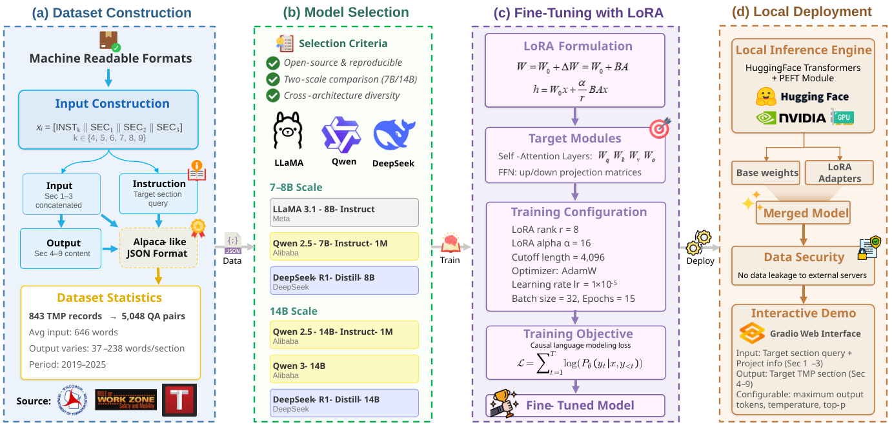
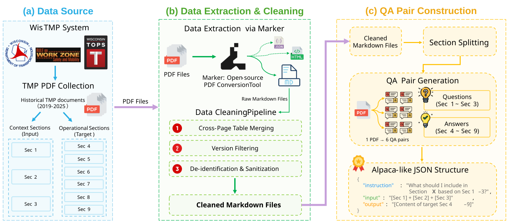

Large Language Model-Assisted Preparation of Transportation Management Plans
A Case Study with WisDOT WisTMP System
✉ Corresponding author
-
843 Historical TMP records
WisTMP · 2019–2025
-
5,048 Instruction–answer pairs
Built from real project documents
-
6 Open-source models
Three families · 7B/8B & 14B
-
6 Target sections
Operational content · Sections 4–9
METHOD
Learn from completed WisTMP documents, then generate section-specific content from a new project's foundational information.
- 01
Build the corpus
Convert, clean and structure historical TMP documents into question–answer pairs.
- 02
Adapt the models
Fine-tune LLaMA, Qwen and DeepSeek models using low-rank adaptation.
- 03
Draft locally
Use project context and a target-section query to generate operational TMP content.


DATASET CONSTRUCTION
Sections 1–3 supply the context. Each available section from 4–9 becomes a separate generation target, yielding up to six training pairs per TMP.


RESULTS
Fine-tuning improves all six models. In this study, moving from 7B/8B to 14B does not consistently improve generation quality.
Before & after fine-tuning
Mean BLEU-4 and ROUGE-1/2/L score · Higher is better
Fine-tuned text generation scores and mean generation time for all six target sections.
| Model | BLEU-4 ↑ | ROUGE-1 ↑ | ROUGE-2 ↑ | ROUGE-L ↑ | Mean ↑ | Time ↓ |
|---|---|---|---|---|---|---|
| LLaMA-3.1-8B-Instruct | 45.9 | 61.3 | 50.7 | 54.5 | 53.1 | 55.8 s |
| DeepSeek-R1-Distill-Llama-8B | 48.0 | 62.9 | 52.7 | 56.7 | 55.1 | 51.6 s |
| Qwen2.5-7B-Instruct-1M | 49.6 | 63.8 | 53.9 | 58.1 | 56.4 | 57.7 s |
| Qwen3-14B | 49.9 | 62.9 | 53.1 | 57.4 | 55.8 | 102.9 s |
| DeepSeek-R1-Distill-Qwen-14B | 49.6 | 62.7 | 52.4 | 56.7 | 55.4 | 100.7 s |
| Qwen2.5-14B-Instruct-1M | 50.8 | 63.5 | 53.3 | 57.6 | 56.3 | 91.2 s |
A drafting assistant, with room to improve.
Strategy-level evaluation reveals over-generation, while the error analysis identifies unsupported project-specific justifications and inaccurate cost estimates. The results support assisted drafting and continued practitioner review.
DEMO
Three recordings of the locally deployed demonstration system. Select a case and play the recording to explore TMP drafting.
LLM-assisted TMP preparation
LOCAL BY DESIGNInference uses locally deployed models so sensitive project information is not sent to external model APIs.
ENGINEER IN THE LOOPGenerated content provides a draft for review, with project-specific strategy choices, justifications and costs requiring particular attention.
@article{sheng2026large,
title={Large Language Model-Assisted Preparation of
Transportation Management Plans: A Case Study
with {WisDOT} {WisTMP} System},
author={Sheng, Zihao and Li, Pei and Huang, Zilin and
Chen, Yen-Jung and Luo, Yuhao and Wan, Zhengyang and
Parker, Steven T. and Noyce, David A. and Chen, Sikai},
journal={arXiv preprint arXiv:2610.10650},
year={2026},
doi={10.48550/arXiv.2610.10650},
url={https://arxiv.org/abs/2610.10650}
}